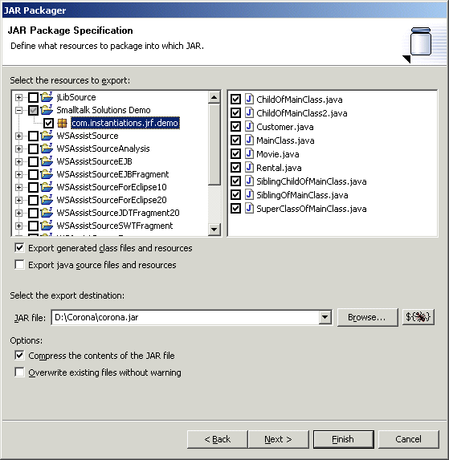
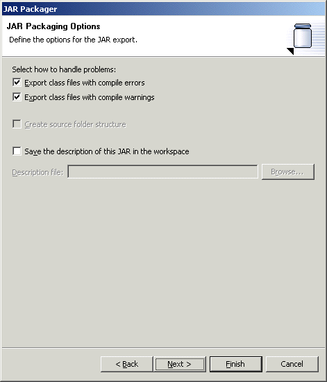
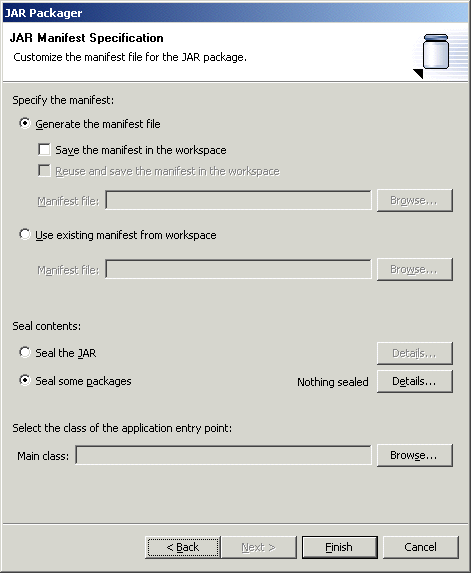

Export Set - JAR File The "Add Export Operation" wizard pages for the "JAR file" operation should be identical to those one would find in the standard export wizard if one were starting a JAR file export manually. The primary difference is that the "Finish" button is used to save the export operation rather than execute it immediately. Note: to avoid potential OperationCanceledException errors during execution, make sure to turn on the "Overwrite existing files without warning" option. If that option is turned off and the jar file already exists, you will get an exception.
  An codepro.exportToJarFile Ant task is used to record the options chosen and perform the operation as part of an Export Set. |